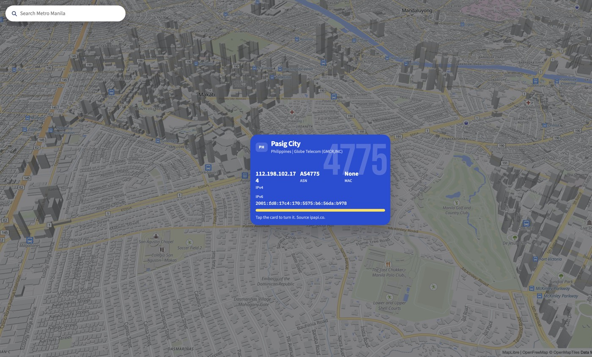

Course DEVASC, section 4ITE
UST College of Information and Computing Sciences
John Constantine C. Acuesta
Luis Gabriel C. Araneta
Emanuel R. Ceniza
November 2026
We chose Option 2. The activity asks for a prototype that shows public IP addressing to network technicians. Option 2 is a new application, so we can shape the page around the address, the ISP, the ASN, and the country code. Option 1 would add features to a directions script. This class needs the address story.
Social coding means the work is shared in Git. Each change reaches main through a pull request with one reviewer. The repository is https://github.com/ichigokekiii/sys-ad. The pull requests in section 4 are not open yet.
Address Card is the page for the demo. It is one Flask page. The map fills the screen, and the address card is a modal over that map. The same page is what we open on a phone and on a laptop.
The page has four features.

https://api6.ipify.org?format=json. The line reads "Checking IPv6" until the fetch returns. Failure says "No IPv6 yet".On a laptop and on a phone, the visitor clicks the pin. The card opens in the center. A click on the card flips it, except a click on a quiz choice or on Check. The X at the corner of the screen closes it. The search box opens a place in Metro Manila. That place has no public IP of its own, so the network rows stay this connection's. The place address is one line on the front, and the full line is on the back.
The phone uses that same centered card.
When the visitor asks for reduced motion, or when scripting is off, the card stays flat. Both faces are already in the HTML.
fun.py still has map_embed for the tests. The page does not show that iframe.
The ISP question has three choices when the ISP is known. The answer is not written into the HTML. The same ISP always rebuilds the same three choices. Grading needs no session. Address Card has no database. The lookup providers and the map need no API key.
The server fills the IPv4 fields in a fixed order. It calls ipwho.is first. If that call fails, it calls ipapi.co. Each call times out after 4 seconds. Any error becomes a notice. The route still returns status 200. Sometimes the visitor's IP is already known and both providers still fail. The page keeps that IP. The notice says that city and ISP could not be loaded. If no IP is known yet, ipify supplies the IPv4 address only. The card records the source as ipwho.is, ipapi.co, ipify, or unavailable.
The server sees the forwarded address and uses it for those IPv4 fields. The browser asks https://api6.ipify.org?format=json for the IPv6 line. IPv6 is not part of the server result. The line reads "Checking IPv6" until the fetch returns. A failed fetch sets the line to "No IPv6 yet".
LOOKUP_MODE=forwarded reads the first X-Forwarded-For entry and looks that address up. A missing header uses request.remote_addr. LOOKUP_MODE=direct ignores the forwarding header. In direct mode, ipwho.is reports the server's public address. That address is the home public IP. If LOOKUP_MODE is unset, a set RENDER variable selects forwarded mode. With RENDER unset, the mode is direct. The LAN backup can rely on that default. The backup command in section 5 still sets LOOKUP_MODE=direct, so the mode is obvious on stage.
Two notice sentences are fixed. When the lookup is only partly successful, the page says "The location lookup is taking a break. The address below is still yours." When no public address comes back, the page says "We could not find a public address right now. Refresh in a moment."
The layout sample, used while the page was designed, is the documentation address 203.0.113.42. The sample ISP is PLDT, the ASN is AS9299, the country code is PH, and the city is Manila. The live page replaces those fields with the lookup.
A right answer shows the word Correct in blue, with confetti. The words then fade, and the map moves to the visitor pin. A wrong answer shows the word Wrong in blue, then "This network is " and the ISP name, and the word shakes. Those words sit on the map, not on the card. The grade stored by the server is still "Correct." or "Close. This network is " plus the ISP name. When the ISP is unknown, the page shows no form. The prompt says the provider did not come back.
The activity deliverables are these.
app.py, ipinfo.py, fun.py, places.py, templates/index.html, static/map.js, static/card.js, and static/search.js.The demo has these objectives.
Roles below are the jobs we assigned. The skillset cells are blank on purpose. We did not guess anyone's background.
| Team member | Role | Assigned work | Skillset |
|---|---|---|---|
| John Constantine C. Acuesta | Scrum leader and PM | UI and pull request reviews | [team to add skillset] |
| Luis Gabriel C. Araneta | Recorder and QA | pytest and README review | [team to add skillset] |
| Emanuel R. Ceniza | Developer | API layer and lookup | [team to add skillset] |
John creates the GitHub repository and reviews the pull requests named in section 4. He also builds the page. Luis keeps the task list, writes the pytest tests, and reviews the README. Emanuel builds the API layer and the lookup.
We will track tasks in a Google Sheet. Luis keeps the sheet, because he is the recorder. The repo copy of that list is tasks.csv. We will export the sheet to tasks.csv so the list can sit next to the code. This paper does not paste sheet rows. The team fills the rows as the sprints run.
The build is three short sprints. Each sprint ends with something we can open.
Sprint 1 is the lookup. Emanuel will build it on the branch emanuel/api. The sprint is done when a request returns a card result. When a provider does not answer, the page shows a notice and stays up.
Sprint 2 is the page. John will build it on the branch john/ui. The sprint is done when a phone and a laptop can both show the card, the map, and the ISP question.
Sprint 3 is the tests, the docs, and the demo. Luis will add pytest on the branch luis/tests and review the README. John will add this paper on the branch john/paper. The sprint is done when three things are true. The tests call the helper functions. The paper is in the repo. We have rehearsed the phone demo and the laptop demo.
We will build in this order.
The backlog in section 7 waits until those three are done. A form for an address a technician types, a header lesson, and a classmate compare are later activity work. They are outside these sprints. We also skipped two ideas that would make the demo risky. Browser location needs more JavaScript than this page can carry. A race among the three providers can fail in the middle of a live demo.
We kept these four features. They can be shown on a phone and on a laptop. They can be built before the demo. They need no API key. The page still renders when one provider is down.
Check-ins. [team to describe check-ins]
The repository is https://github.com/ichigokekiii/sys-ad. main is already on that remote. Collaborator invites and pull requests are not done. The usernames stay [Luis GitHub username] and [Emanuel GitHub username] until the team writes the real ones. Pull request numbers stay [PR number].
John invites [Luis GitHub username] and [Emanuel GitHub username]. Luis and Emanuel clone the repository that already exists.
git clone https://github.com/ichigokekiii/sys-ad.git
Four branches will exist. Each pull request has one reviewer. The author of a branch does not approve that same branch. John is the reviewer on emanuel/api and on luis/tests. Each of those pull requests still has one reviewer.
| Branch | Author | Reviewer | Pull request |
|---|---|---|---|
| emanuel/api | Emanuel R. Ceniza | John Constantine C. Acuesta | [PR number] |
| john/ui | John Constantine C. Acuesta | Luis Gabriel C. Araneta | [PR number] |
| luis/tests | Luis Gabriel C. Araneta | John Constantine C. Acuesta | [PR number] |
| john/paper | John Constantine C. Acuesta | Emanuel R. Ceniza | [PR number] |
Luis reviews the README as QA. The table still names the one person who approves each pull request.
The branch flow is the same for all four. This is the lookup branch.
git checkout main git pull git checkout -b emanuel/api
After the lookup files are ready, Emanuel commits and pushes.
git add . git commit -m "Add the lookup fallback" git push -u origin emanuel/api
He then opens a pull request on GitHub from emanuel/api into main. The pull request number is [PR number] until GitHub assigns one. John is the reviewer. John approves the pull request, or he asks for a change on the same branch. Emanuel pushes any requested change to emanuel/api. Merge to main waits until John approves.
The other branches use the same commands. Only the branch name, the commit message, and the reviewer change.
john/ui uses a message in the shape "Add the Address Card page". Luis reviews it.luis/tests uses a message in the shape "Add pytest for the lookup helpers". John reviews it.john/paper uses a message in the shape "Add the Activity 3 paper". Emanuel reviews it.After a merge, the author updates local main.
git checkout main git pull
If git reports a conflict, the author fixes it on the feature branch and pushes that branch again. The merge to main still waits for the assigned reviewer.
The talk is planned for 15 minutes. Slides 1 through 11 take 14 minutes. Slide 12 is questions in the last minute. If the live demo runs long, we shorten slide 10 and slide 11. The backlog and the reflection are already in this paper.
The slide shows the project title, course DEVASC, section 4ITE, UST College of Information and Computing Sciences, our three names, and November 2026. The speaker says the app name, Address Card, and says the demo is live on a phone and on a laptop.
The slide says Option 2. The speaker gives the reason from section 1. The class asked for a prototype that shows public IP addressing to network technicians. A new app lets us shape the page around the address, the ISP, the ASN, and the country code. Option 1 would add features to a directions script.
The slide lists the four features we are shipping.
The speaker says why these four stayed. They can be shown live on a phone and on a laptop. They need no API key. The page still renders when one provider is down. A typed lookup, a header comparison, and a classmate compare wait for a later activity. Browser location and a provider race stay off the stage.
The speaker states the shape of the app. Address Card has no database and no API key. ipwho.is is first. ipapi.co is second. ipify supplies an IPv4 address only when the server still has none. The map fills the screen. MapLibre draws it with the OpenFreeMap Liberty style. The camera pitches. The tiles are OpenFreeMap, not Mapbox. A place search uses Nominatim and keeps only results inside Metro Manila. fun.py still has map_embed for the tests. The page does not show that iframe. Each lookup call times out after 4 seconds. A failure becomes a notice, and the route still returns status 200. The server sees the forwarded address and fills the IPv4 fields. The browser asks https://api6.ipify.org?format=json for the IPv6 line.
The speaker names six files and what each one owns.
app.py is the Flask shell. It serves the index route, POST /quiz, and GET /places. Gunicorn loads app:app.ipinfo.py parses the forwarding header and the provider JSON. It owns the timeout and the fallback order.fun.py owns the roast lines, the ISP question, the grading, and map_embed. The tests call map_embed. The page does not show that iframe. Those functions are pure. The tests in sprint 3 can call them without a browser.places.py searches Metro Manila. A place outside the box is dropped. A short query returns nothing. It does not invent an IP.templates/index.html holds the map container, the search box, both faces of the card, and the ISP question on the back. Both faces stay in the page when scripting is off. The IPv6 fetch is a few lines in this file.static/map.js starts MapLibre with the OpenFreeMap Liberty style and a pitched camera. It places the orange visitor pin and the blue place pin. A click on a pin opens the card. It loads no API key.static/card.js opens the card, flips it, scrolls the back, and closes it. The X sits at the corner of the screen. A right or wrong answer is blue text on the map.static/search.js fills the search list from GET /places and opens the chosen place.Open the Render URL a few minutes early. Section 6 says why. Then follow this order.
If Render does not wake, start the app on John's PC. The phone joins the same Wi-Fi and opens http://[PC LAN address]:5000.
LOOKUP_MODE=direct flask run --host 0.0.0.0 --port 5000
Direct mode asks ipwho.is for the server's public address. That address is the home public IP. The command sets LOOKUP_MODE=direct so the class can see the mode. A machine outside Render already uses direct mode when LOOKUP_MODE is unset.
The slide shows https://github.com/ichigokekiii/sys-ad and the four branch names. The speaker says main is already on that remote. We invite [Luis GitHub username] and [Emanuel GitHub username]. We merge to main only after the one assigned reviewer approves. Pull request numbers stay [PR number] until GitHub assigns them. The full command list is section 4.
The speaker reads the six backlog items from section 7. They are outside the class demo. If the demo ran long, read the list and skip the comment.
The speaker says section 8 is a DRAFT. Each of us will replace the starter with our own words. We will not read a story that did not happen.
Stop and ask for questions. If the class asks for a lookup we did not build, point at the backlog.
The live page is https://address-card.onrender.com/. The free instance sleeps, so open it a few minutes before the demo.
These items are real later work. They are not part of the demo. The same list is on GitHub for Project Activity 4, at https://github.com/ichigokekiii/sys-ad/issues.
The header lesson and the classmate compare sit with that later work. The plan calls them Activity 4 work. Browser location and a latency race are not on this list. We dropped them because they make a live demo fragile.
The activities below are the plan. They are not a claim that the sprints already happened. Every reflection is a DRAFT. The team rewrites each DRAFT in their own words before the paper is final. This draft does not record a lived incident.
Planned activities.
tasks.csv.This DRAFT does not record a lived incident. The starter below only restates the plan. The work is split the way the branches are split. Emanuel takes the lookup, John takes the page, and Luis takes the tests and the README review. Each change is supposed to merge through one reviewer. Rewrite this paragraph with what the team actually saw.
This DRAFT does not record a lived incident. The team has not written a problem here. Name the problem, name the change we made, and name who made it. Delete this starter before the paper is handed in.
This DRAFT does not record a lived incident. The team has not written a bug here. Two design facts are already in the plan, and they belong in this answer only if they show up while we build. The lookup tries ipwho.is, then ipapi.co, then a notice or ipify. The server sees the forwarded address and fills the IPv4 fields from that lookup. The browser asks api6.ipify.org, and a failed fetch sets the badge to "No IPv6 yet". Replace this paragraph with a problem that happens and with the fix.
This DRAFT does not record a lived incident. The role table in section 2 is the assignment, not a report card. Write whether each person did the assigned work. If a task stalled, write what we changed. Delete this starter if the sprints have not produced that record yet, and replace it with the real record when they have.
This DRAFT does not record a lived incident. The plan already keeps four features. They are the 3D card, the map pin, the IPv6 badge, and one roast with one ISP question. Those four can be shown at the demo, they need no API key, and the page still works when one provider is down. The typed lookup, the header lesson, and the classmate compare stay on the backlog. Rewrite this with any decision we make that was not already written in the plan.
This DRAFT does not record a lived incident. After the sprints, write one lesson from work that happened. Leave out any story that did not happen. Delete this starter and put that lesson in its place.